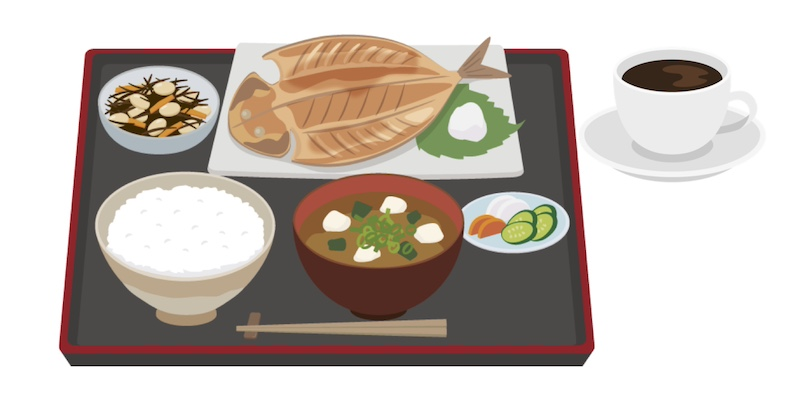

公開日：2026年3月｜最終更新：2026年5月
毎日の食事を完璧に整えることは、実はとても難しいことです。
栄養のバランス、量、調理方法、継続性――どれも理想通りに行うのは簡単ではありません。
その一方で、比較的簡単に、今日から取り入れやすい習慣として、 コーヒーが注目されています。
コーヒーは世界中で飲まれており、その影響を調べた疫学研究が数多く行われてきました。
その結果、コーヒーを日常的に飲む人は、全体として死亡率が低い傾向にある ことが、複数の研究で共通して報告されています。
食事全体を大きく変えることが難しい場合でも、 「いつもの生活にコーヒーを加える」ことは、 比較的実行しやすい工夫のひとつと言えます。
コーヒーと健康の関係の中でも、 肝臓の病気については、比較的一貫した研究結果が報告されています。
複数の大規模研究やメタ解析において、 コーヒーを多く飲む人ほど、肝臓がんの発症が少ない傾向 が示されています。
つまり、肝臓がんについては、 単なる偶然では説明しにくい関連が、長年の研究で繰り返し確認されている分野だと言えます。詳しく知りたい方は、参考文献をご覧ください。
研究では、コーヒーに含まれる成分が、 体の中で次のような働きをしている可能性が指摘されています。
これらの作用には、「NAD」や「サーチュイン」と呼ばれる体内の仕組みが関係していると考えられています。
日本には、魚・大豆製品・野菜・海藻を中心とした、 いわゆる和食（日本型食生活）という、 世界的にも評価の高い食文化があります。
和食は、塩分のとり過ぎに注意が必要な面はあるものの、 全体としては、次のような特徴を持っています。
近年、Nutrition誌（94号, 2022年）に掲載された研究では、 日本型の食事パターンを基本としながら、コーヒーを摂取している人では、 死亡リスクがより低い傾向 が示唆されています。
和食では、食後にお茶が定番ですが、 体質や体調に問題がなければ、 食後の一杯としてコーヒーを取り入れる という選択も、無理のない工夫のひとつです。

健康によさそうだからといって、 無理にコーヒーを飲む必要はありません。
これらに当てはまる場合は、 量を控える、薄める、カフェインの少ないものに替えるなどの工夫が大切です。
健康のために「正しい食事」を完璧に実行することは、現実には簡単ではありません。
その中でコーヒーは、 比較的手軽に取り入れやすく、科学的なエビデンスも蓄積されている飲み物 です。
とくに、
飲める方は、生活の中で上手にコーヒーを楽しんでみましょう。
飲めない方は、無理をする必要はありません。
※ 本ページは、疫学研究や医学文献をもとに、高齢者・一般の方にも分かりやすい形でまとめたものです。
医療経済オンライン（470号, 2022年）では、国内外の疫学研究をもとに、 コーヒー摂取と健康影響について整理した解説が掲載されています。
そこでは、コーヒーの摂取量が多い人ほど、 全死亡、肝疾患による死亡、肝臓がんの発症リスクが低い傾向 を示す研究結果が複数紹介されています。
とくに肝臓がんについては、 一つの研究結果ではなく、 複数の研究を統合して評価（メタ解析）した結果 においても、リスク低下が一貫して示されている点が特徴です。
これらの研究は、 「コーヒーを飲めば病気を防げる」と結論づけるものではありませんが、 日常的なコーヒー摂取が、健康に悪影響を及ぼす可能性は低く、 むしろ有益である可能性が科学的に評価されている ことを示しています。
※ 本ページは、上記文献を含む疫学研究・総説を参考に作成しています。